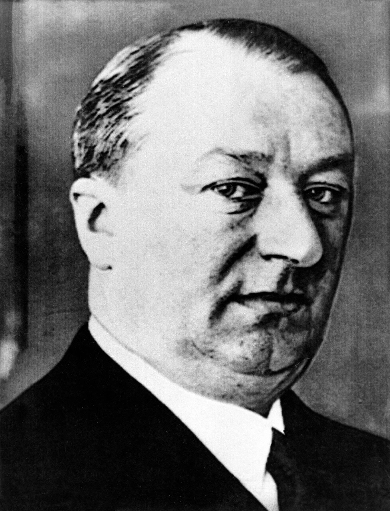

Fabricars

Ettore Bugatti
Nació el 15 de septiembre de 1881 en Brescia, Italia.Criado en una familia de artistas con origen en Milán, fue el hijo mayor de Carlo Bugatti y su esposa Teresa Lorioli. Su hermano menor fue el renombrado escultor de animales, Rembrandt Bugatti.Talentoso ingeniero que ideó magníficos y elegantes automóviles que pasaron a ser legendarios.Se interesó por la mecánica cuando era un estudiante de la Academia de Bellas Artes de Milán.Con 17 años se inicia como aprendiz de un fabricante de bicicletas.En el año 1901 fabrica su primer automóvil, que fue laureado en la Exposition Internationale de Milan. Un año después se radica en Niederbronn (Alsacia) donde fabrica prototipos en asociación con De Dietrich.Crea su propia sociedad en 1909 en Molsheim (Alsacia). En 1910, el Type 13 fue el primer automóvil en llevar la marca Bugatti.Durante la I Guerra Mundial fabricó motores para aviones. Tras el fin de la guerra retorna a la fabricación de automóviles: el Royale en 1926, los deportivos más renombrados de la época como los modelos Types 37, 40, 43, 44, 46, 49 et 57.En 1907 contrajo matrimonio con Barbara Maria Giuseppina Mascherpa, con la que tuvo tuvo dos hijas y dos hijos. Tras el fallecimiento de su esposa en 1944, se volvió a casar en 1946, con Geneviève Marguerite Delcuze, con ella tuvo una hija y un hijo
